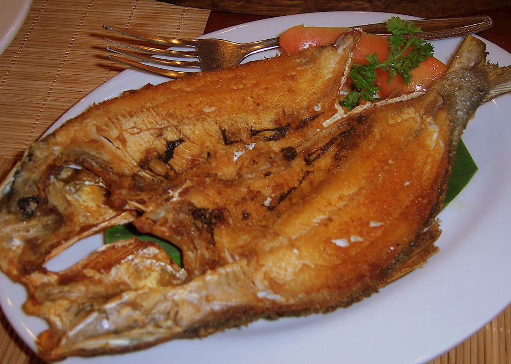

Boneless Bangus

Fried Bangus or Fried milkfish is a simple dish that is packed with flavors. The milkfish alone has its deliciously rich taste (especially the belly) while the marinade gives it a sour spicy flavor.
Adobong Manok
Adobong manok is a traditional stew originating from the Philippines. This type of Filipino adobo is made with a combination of chicken, garlic, onions, bay leaves, peppercorns, oil, brown sugar, soy sauce, and white vinegar.
Lumpia
This is a traditional Filipino recipe for lumpia, or fried spring rolls. They're made with paper-thin lumpia wrappers and filled with a savory mixture of ground pork, cabbage, and other vegetables.
Pinakbet

Pinakbet is a popular dish from the northern part of the Philippines, the Ilocos region. This dish typically includes vegetables like eggplant, squash, and bitter melon, bagoong (shrimp or fish paste), garlic, and ginger.
Sinigang na Baboy

Sinigang na Baboy is the ultimate comfort food! Made with pork ribs, vegetables, and tamarind-flavored broth, it's hearty and delicious on its own or served with steamed rice.
Kare-Kare
A peanut stew made with oxtail and vegetables, often served with bagoong. Serve with steamed rice for a complete meal
Sisig

Sisig is a popular Filipino dish made by boiling, chopping, and grilling parts of pig's head such as ears, cheeks, The meat is combined with fried onions, sili, and chicken livers, and the whole concoction is traditionally topped with a raw egg.
Lechon

Lechon available in the South, the Visayas and Mindanao regions, are usually stuffed with lemongrass, garlic, spring onions, and chilies but the stuffing can range from anything like ginger, peppers, garlic chives to even pineapples.
Escabeche Lapu Lapu

Escabeche Lapu Lapu is easy to make for family dinners yet fancy enough for special occasions. This Filipino-style sweet and sour fish with pickled vegetables and sweet and tangy sauce is delicious with steamed rice and sure to be a crowd favorite.
Ginisang Kangkong
Stir-Fried Kangkong, also known as Ginisang Kangkong, is one of the easiest and most delicious side dishes to prepare with the slightly sweet and fresh flavor of kangkong.
Paksiw

Paksiw is a term used to refer to dishes cooked in vinegar and garlic. This could pertain to meats like pork (Paksiw na Pata and Lechon Paksiw are some of the examples) and seafood.
Papaitan
Papaitan is a famous Ilocano soup dish mostly composed of cow or goat innards. The name of this dish was derived from the Filipino word “Pait”, which means “bitter”.